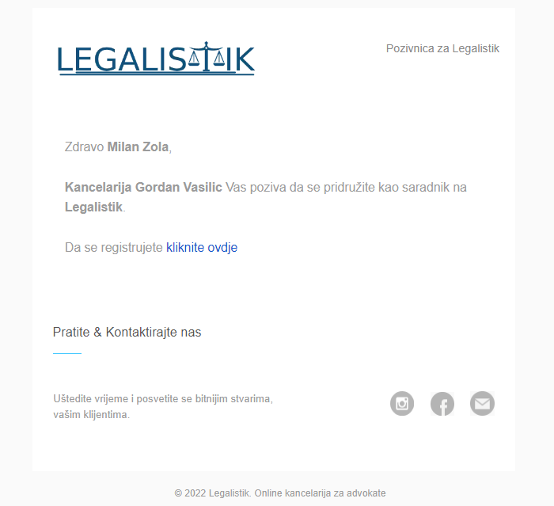
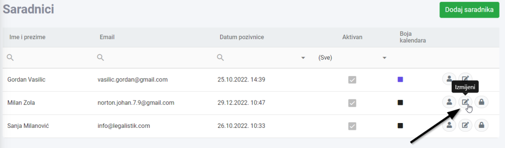
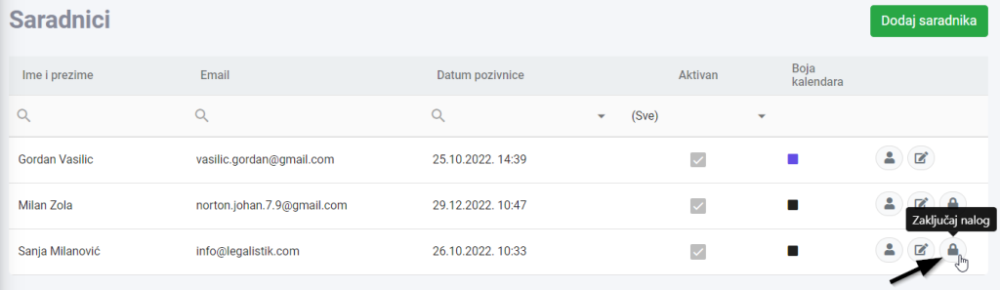

Dodavanje saradnika #
Da bi dodali novog saradnika unutar Legalistik aplikacije, potrebno je kliknuti na “Dodaj saradnika” dugme u meniju Saradnici:

Popunite ime, email adresu i izaberite alate kojima će saradnik imati pristup:

Saradnik će na email adresu dobiti pozivnicu i link preko kojeg će završiti rgistraciju i dobiti pristup, a pojaviće se i u meniju Saradnici:

Izmjena podataka o saradniku #
Podatke o saradniku, kao i njegove privilegije možete mijenjati klikom na ikonu “Izmijeni”:

Deaktivacija saradnika #
Ako saradnik više nije aktivan ili nije više zaposlen u advokatskoj kancelariji, može se deaktivirati klikom na ikonu “Zaključaj nalog”:

Ako želite poptuno da obrišete sve podatke o saradniku, pošaljite nam njegovu email adresu na [email protected].